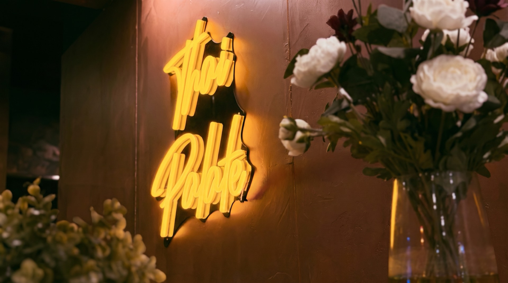
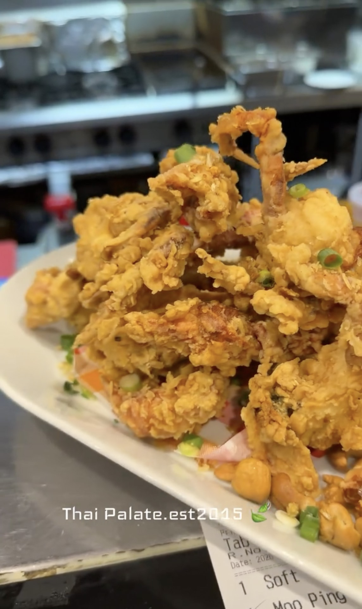

2015 · The beginning
Established in 2015
Thai Palate opened on Australia Avenue with bright, generous Thai food made to share.
Thai Palate · Sydney Olympic Park · Since 2015
We opened on Australia Avenue with a simple idea: cook Thai food the way it is eaten in Thailand — bright, generous, and made for the middle of the table.
Scroll to follow the story
Thai Palate · Since 2015

Thai Palate opened on Australia Avenue with bright, generous Thai food made to share.
Slow coconut curries, crisp whole snapper, prawns with chilli jam and basil, and lime-bright salads.

Concert nights bring a full house; lunch is quieter, with familiar plates made to order.

A short walk from the station and arena. Come before the show, after it, or on an ordinary Tuesday.
A small room, a full table
We’re a 58-seat room, and we like it that way. On concert nights the pass gets loud; at lunch, locals settle in over tom yum and pad see ew. Same kitchen, same hands, same food.
Find us a short walk from the station and around the corner from the arena. Come before the show, after it, or on a Tuesday when there’s no reason at all.
7 Australia Avenue · Get directions